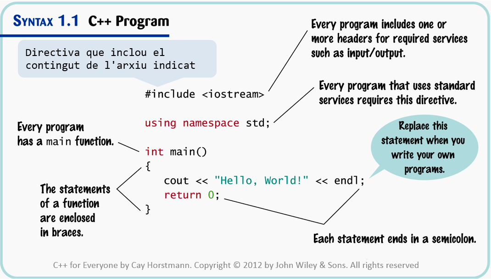

1.3 ESTRUCTURA D'UN PROGRAMA

En la imatge anterior tenim un exemple de programa que ens escriu per pantalla "Hello, World!". El contingut del programa, va dins de la funció main, que quant retorna 0 (return 0) implica que el programa ha acabat bé.
Documentar i comentar
-
//: comenta el text que segueix fins que s'acabi la línia.
// Aquest programa llegeix 2 nombres reals i en mostra la suma. -
/* */: comenta el bloc de text contingut entre /* i */, pot contenir més d'una línia.
/* Aquest programa llegeix 2 nombres reals corresponents a les notes de dos alumnes de primer curs de la Politècnica de la UdG i mostra la seva suma. */
Exemple: Suma de 2 nombres reals
#include
using namespace std;
// Aquest programa llegeix 2 nombres reals i mostra la seva suma.
int main() {
double n1, n2;
cout << "This program adds two numbers." << endl;
cout << "1st number: ";
cin >> n1;
cout << "2nd number: ";
cin >> n2;
double sum = n1 + n2;
cout << "The sum is " << sum << endl;
return 0;
} | Resultat de l'execució: |
| This program adds two numbers. 1st number: 3 2nd number: 9 The sum is 12 |